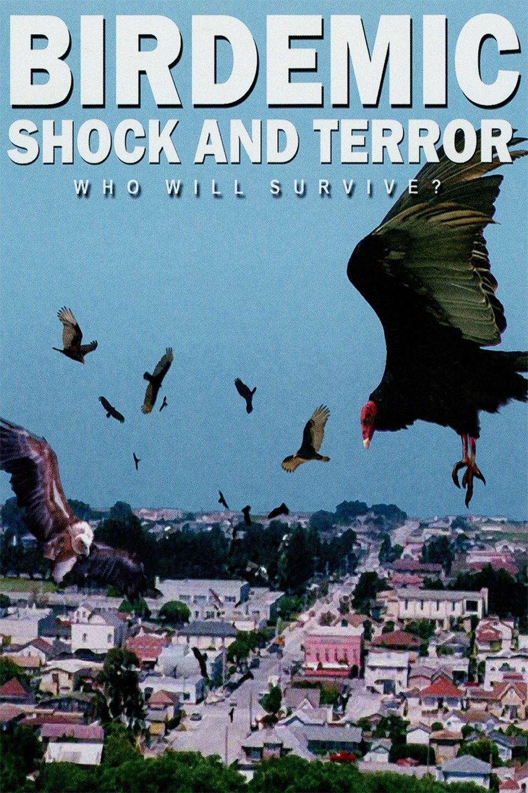

batman serisinin en anlamsız ve kötü filmi. tim burton'un yapımcılıktan da elini eteğini kesmesi üzerine meydan joel schumacher'e kalır ve kendisi de batman serisini yerle bir etmek için elinden geleni yapar. batman olarak seçilen george clooney rezalet. sürekli sırıtıp, gevezelik yapıyor ki bruce wayne'in doğasına ters. göt çenesi var diye batman için uygun olduğu düşünülmüş olabilir, o zaman bizim turgut özal'dan da harika batman olur. bruce wayne'in aşık olduğu kadın rolünde elle macpherson evlere şenlik.

yahu diğer filmlerde bruce ve femme fatale arasındaki tutkuya alışmışız.
bu filmde tutku falan yok, al gülüm ver gülüm sıradan bir ilişki
var. zaten çok da üstüne gidilmemiş. rahmi
robin desen ayrı terane, ota boka diklenip duruyor. çakacan iki
tane ağzına oturacak. bir de yırtık dondan çıkar gibi alfred'in yeğeni
barbara çıkıyor. bu rolü oynayan alicia silverstone sanki
bıyıklıymış gibi geldi izlerken. arkadaş şatoya giren süper kahraman
oluyor bu filmde. anlamadım ki ne iştir, sen yıllarca alfredle
beraber sırrını sakla, tek filmde sır orospu olsun. ağızdan ağıza. oh ne
ala memleket. arnold rolüne acaip uyum sağlamış. mr. freeze filmin en
başarılı karakteri. poison ivy ise uma thurman sayesinde eh dedirtti.
gotham city desen olmuş nişantaşı, schumacher nerden filme el atsa ordan
kalbura çevirmiş. o kadar kötü bir film ki bu 8 yıl kimse batman serisi
çekemedi. 8 yıl sonra da bu işe girişen christopher nolan, schumacher'in
enkazını unutturmak için hikayeyi başından ele aldı.
|
|
 |
|